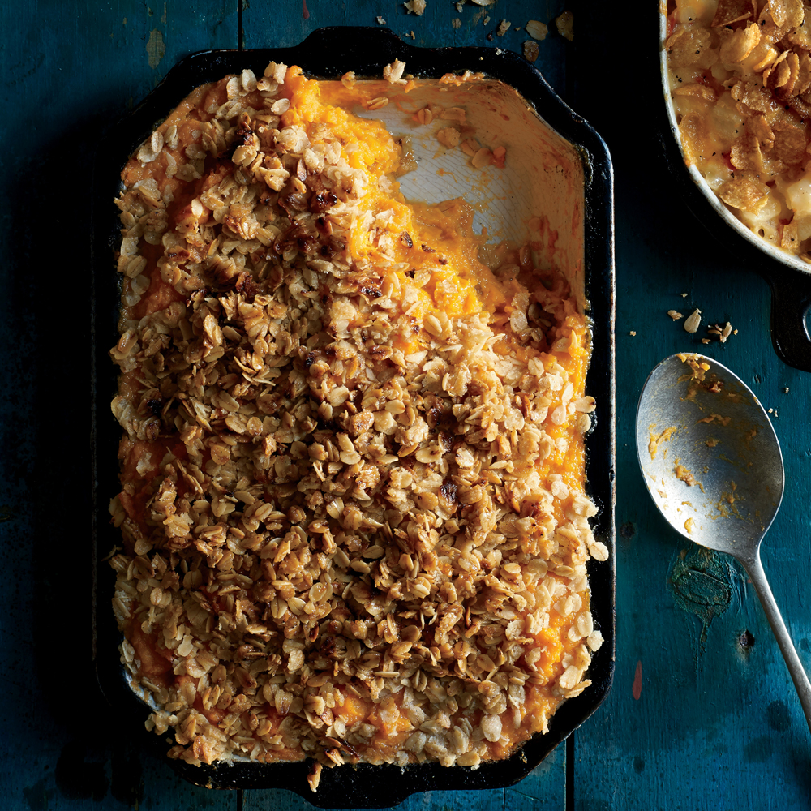

Sweet Potato Casserole

Description
From the Kitchen of…Hazel Eddins,
Production EditorHazel and her
daughter prefer a marshmallow-free
sweet potato casserole that Hazel has
made since she was a teenager. Our
modern twist on the classic sweet
potato casserole is fragrant vanilla
bean streusel.
Ingredients
- 3 pounds sweet potatoes, peeled and cubed
- 3 tablespoons canola oil
- 2 tablespoons butter
- ½ vanilla bean
- 6 tablespoons packed brown sugar, divided
- 1 ¼ teaspoons kosher salt, divided
- 1 teaspoon cinnamon
- 1 (5-ounce) can evaporated milk
- Cooking spray
- 1 cup old-fashioned oats
- ⅔ cup coarsely chopped pecans, toasted
- 1 ½ tablespoons all-purpose flour
Steps
-
Place potatoes in a Dutch oven;
cover with cold water to 2 inches
above potatoes. Bring to a boil;
reduce heat, and simmer 15 minutes
or until very tender. Drain; place
in a large bowl.
-
Heat oil and butter in a medium
skillet over medium heat until
butter melts. Split vanilla bean
lengthwise; scrape out seeds. Add
seeds and vanilla bean pod to oil
mixture; cook 30 seconds. Remove
pan from heat; let stand 10 minutes. Remove pod; discard.
-
Preheat oven to 375°F.
-
Add 2 tablespoons sugar, 1 teaspoon
salt, cinnamon, and milk to
potatoes. Beat with a mixer at
medium speed until smooth. Spoon
potato mixture into an 11 x 7-inch
baking dish coated with cooking
spray.
-
Add oats, pecans, flour, remaining
1/4 cup sugar, and remaining
1/4 teaspoon salt to butter
mixture; toss. Sprinkle over
potato mixture. Bake at 375°F for
35 minutes or until bubbly around
the edges.